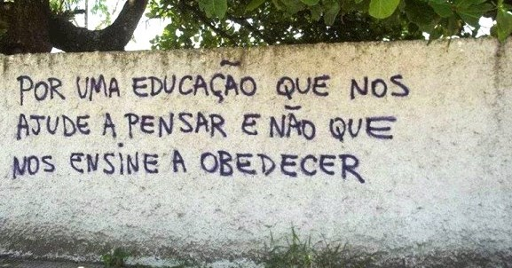

Wilhelm Reich dizia que "a família burguesa capitalista espelha e reproduz o Estado". O mesmo se pode dizer das escolas onde também se pratica a pedagogia autoritária. Educadas dessa maneira, as crianças e os jovens tornam-se obedientes e submissos aos pais, aos professores e ao Estado.
Em verdade, tanto a pedagogia doméstica quanto a escolar, quando autoritárias, visam reprimir nas crianças e nos jovens o sentimento e a necessidade da liberdade como condição fundamental da existência. Sem esse sentimento e sem essa necessidade, desaparecem nas pessoas o espírito crítico e o desejo de participação ativa na sociedade. São os dependentes. Desgraçadamente, a maioria.
Na vida familiar, três são as armas principais da pedagogia autoritária: primeiro, o pátrio poder (os filhos devem obedecer aos pais, por lei, até a maioridade), o que é um abuso e uma violência tornados legais; segundo, o amor, sentimento natural de beleza e gratidão que os pais transformam em instrumento de dominação e de posse sobre os filhos, fazendo com que se submetam as suas vontades chantagísticas, usadas para não sentirem a dor do remorso e do abandono; terceiro, pela dependência dos filhos ao dinheiro dos pais e pela ameaça, também chantagística, de afastá-los de casa sem nenhum recurso financeiro.
Crianças que foram educadas sob uma destas três formas (ou sob todas) de autoritarismo entram na escola já deformadas e facilmente projetam nos professores o poder dos pais sobre si. Não conseguem criticá-los e, se o fazem, não transformam a crítica em ação, a não ser contra si mesmos, tornando-se indiferentes ao conhecimento e apresentando baixo rendimento escolar.
Homens e mulheres criados no ambiente familiar e escolar autoritários são os que garantem a manutenção das ditaduras e do capitalismo, bem como as falsas democracias. Eles "espelham e reproduzem o Estado", são pessoas neuróticas, fracas, despreparadas, incompetentes e impotentes para a vida pessoal plena e social satisfatória. Servem apenas para se submeter, obedecer, entrar em linha de montagem na produção, ser massificadas pela mídia e votar a favor dos poderosos, mostrando-se indiferentes, se conseguem um trabalho que os sustente, à miséria da maioria.
